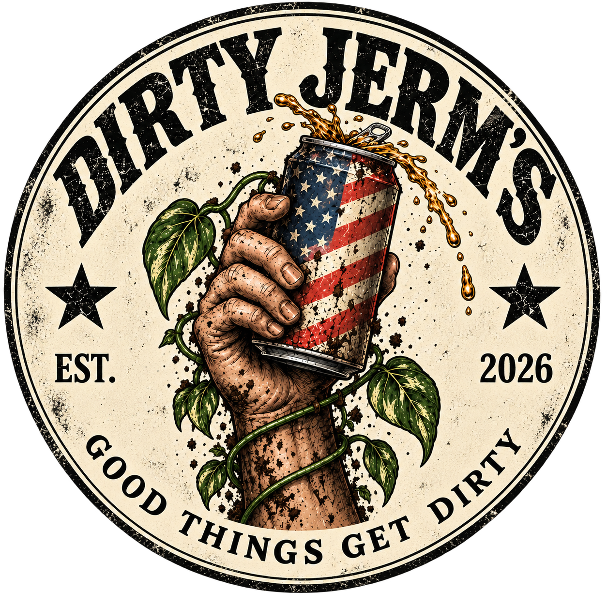

FILTHY RICH
Chunky, airy, root-happy house mix. No miracle claims. No mystical forest bullshit. Just some damn good dirt.
GET YOUR HANDS DIRTYHEY. COME ON IN.
Dirty Jerm's is a small maker shop for plant people who like useful things, weird ideas, and seeing how the hell something actually gets made.
The door's open. There's probably dirt on the floor. Make yourself at home.

grab a drink.THE SHORT VERSION
That's pretty much it.
THE LONGER VERSION, SINCE YOU'RE HERE
Dirty Jerm's started with a simple problem: a lot of plant gear feels like it was designed around the product instead of the plant. So we're doing it differently.
We design, prototype, print, test, break, rebuild, swear at it, test it again, and keep going until it earns a spot in the world. The goal is useful gear that helps plants climb, root, unfurl and grow — without making plant ownership feel like homework.
And you're here early. Good. You get the sketches, ugly prototypes, dumb ideas that somehow work, good ideas that absolutely do not, and the final stuff that survives all of it.
WHAT'S ON THE BENCH
We're not filling a warehouse with random crap. We're making a small lineup of things we'd actually use — dirt, plant gear, and whatever weird little build earns its keep.
Chunky, airy, root-happy house mix. No miracle claims. No mystical forest bullshit. Just some damn good dirt.
GET YOUR HANDS DIRTYModular supports built around how climbing plants actually grow — grab on, root in, keep moving up.
ON THE BENCHAccessories, experiments, limited runs, and the occasional “this might be stupid” idea that turns out to be useful.
WE RESERVE THE RIGHT TO GET DISTRACTEDFROM THE GREEN BOOK
Bad ideas are allowed in The Green Book.
The Green Book is the working brain of Dirty Jerm's: sketches, measurements, prototypes, plans, failures, fixes, and the occasional idea that sounds completely stupid until it works.
We're building this thing in public. You don't just get the finished product — you get to see the dirt road that got it there.
WELCOME TO THE FOUNDRY
The Foundry is the dirty middle between “I have an idea” and “okay, this actually works.” It's printing, testing, trimming, changing a dimension, trying again, and wondering why version four somehow worked better than version seven.
We don't hide that part. It's half the fun. If something is ugly, we'll say it's ugly. If it fails, we'll show you why. When it finally works, you'll know exactly how it got there.
Some prototypes are gonna be ugly.
Good. They're learning.
A LITTLE SOMETHING YOU SHOULD KNOW
Dirty Jerm's is either your kind of place or it isn't — and that's okay.
We'd rather build something our people fucking love than something everybody kinda likes.
If you're still here, pull up a stool. You're probably one of our people.
WHAT THE HELL IS DIRTY JERM'S?
We care about making good products. We care about plants thriving. We care about testing things properly and making something worth paying for.
We just don't think any of that requires talking like a furniture catalog or acting like everybody needs to be impressed all the time.
Dirty Jerm's should feel like the garage, the greenhouse, the farm, the kitchen table and your best friend's house all got mashed together. Useful stuff. Dirt everywhere. Somebody laughing too loud. A project half-finished in the corner. You're welcome to stay.
THAT'S THE WHOLE DAMN BRAND.NEED SOMETHING?
Question, order issue, idea, complaint, or something else we should probably know about?
support@dirtyjerms.com We'll get back to you. Probably with dirt on our hands.LAST CALL
Thanks for stopping by. Door's always open.